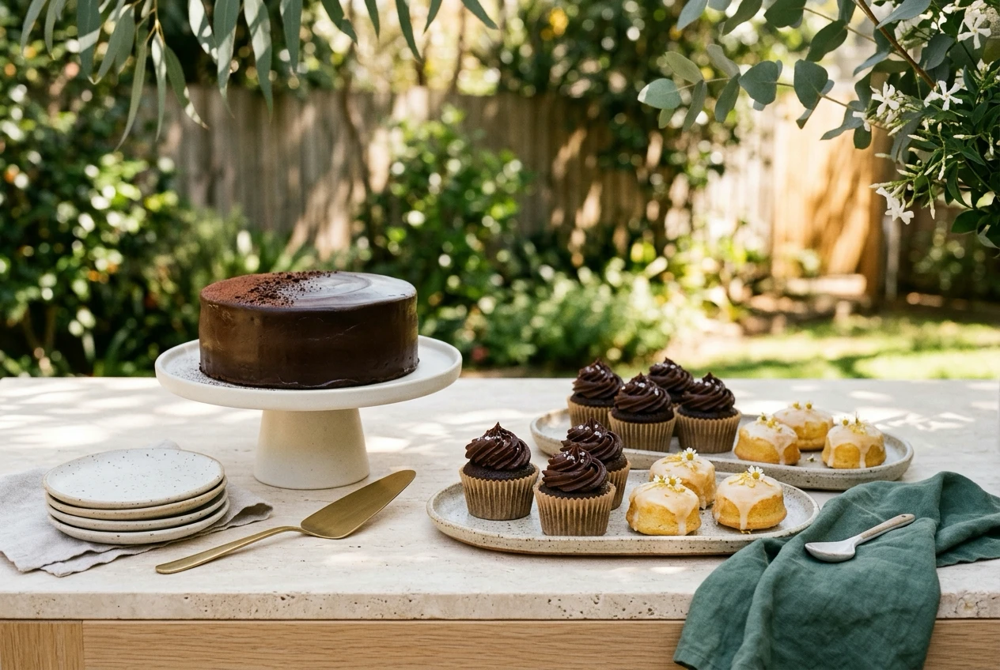
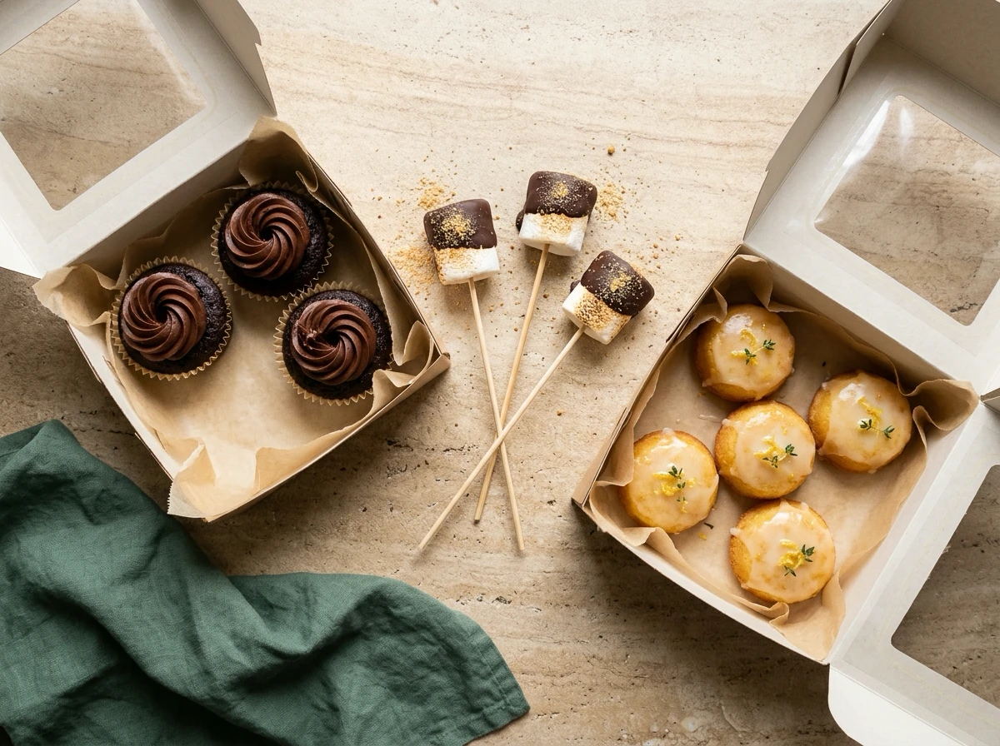
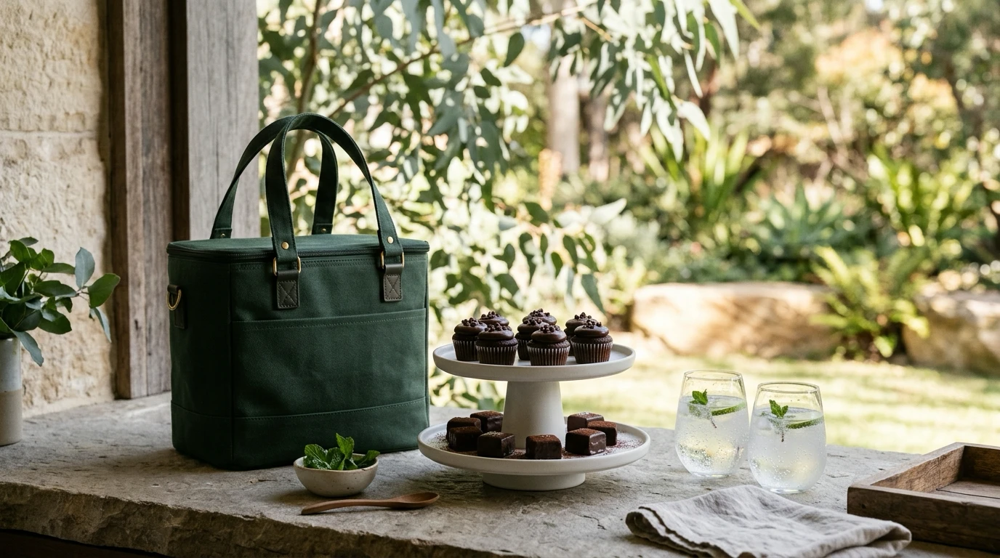

VERYGOOD JOURNAL · SUMMER & END-OF-YEAR GATHERING GUIDE
Why the venue, serving utensils and Australian summer weather should guide whether you order one centrepiece cake or individual cupcakes, little lemon cakes and s’more sticks.
Before choosing a flavour for an end-of-year office break-up, birthday picnic or family lunch, check how guests will actually eat it. A celebration cake assumes a table, a clean knife, plates and someone ready to slice.[17]
In late spring and summer across Sydney, many gatherings happen standing up—in a meeting room, on a shaded terrace or at a park picnic. Deciding between one centrepiece whole cake and individual small bites starts with the venue, not the icing.
KEY TAKEAWAY · MATCH THE FORMAT TO THE ROOM
Order a whole cake when you have plates, forks and a dedicated slicer for a seated moment; choose cupcakes or boxed small bites when guests are standing, mingling or sharing outdoors in warm weather.

A centrepiece dark chocolate ganache cake with server and plates beside grab-and-go chocolate cupcakes and glazed lemon cakes—or pair both formats for a hybrid summer table.
A whole cake creates a clear focal point for candles, speeches and photos. Yet cutting a round cake into tidy wedges or neat grid slices requires a flat surface, a sharp blade, plates, forks and a bin nearby.[15][17]
Individual small bites—such as cupcakes, glazed little lemon cakes or chocolate-dipped s’more sticks—remove every cutting step. Guests pick up one portion cleanly in a napkin, leaving zero queue around a cake knife.
FORMAT ANATOMY · SEATED RITUAL VS. STANDING CONVENIENCE
CENTREPIECE WHOLE CAKE
Seated Dinners & Candle Moments
Delivers an unmistakable celebratory centrepiece for photos and toasts. Needs a warm blade, plates, forks and an agreed slice plan.[15][17]
GRAB-AND-GO SMALL BITES
Standing Break-Ups & Outdoor Picnics
Zero cutting required, effortless pass-around in napkins, and easy box-by-box portioning when people mingle across rooms or lawns.
With a whole cake, final headcount depends on who holds the knife and whether slices are cut as smaller coffee portions or larger dessert wedges.[15][17] One guest taking a generous wedge can leave later arrivals short.
Pre-portioned boxes make headcount straightforward: one cupcake or little cake equals one serving, making it easy to plan for latecomers or distribute extra pieces cleanly at the end of an afternoon.

Boxed chocolate cupcakes, little glazed lemon cakes and chocolate-dipped s’more sticks keep portions predictable for office teams and casual parties.
Australian summer heat changes how long chilled desserts can wait on a table. Under Food Standards Australia New Zealand (FSANZ) guidance, perishable foods such as dairy-based cream toppings belong at 5 °C or below.[7][24]
FSANZ’s 2-hour / 4-hour rule tracks cumulative time spent between 5 °C and 60 °C—counting transport and table setup together.[24] Items kept out for under two hours may return to the fridge, items out between two and four hours must be served straight away, and anything past four hours must be discarded.[24]
For outdoor picnics or office spreads without immediate kitchen fridge space, insulated cooler bags with ice bricks help protect chilled boxes until serving time, while keeping tempered chocolate-coated treats out of direct sun.[7]
AUSTRALIAN SUMMER HOSTING · FSANZ TEMPERATURE GUIDANCE
UNDER 2 HOURS
Chilled Cream Desserts
Store fresh-cream cakes and cream-topped cupcakes at 5 °C or below until serving, counting commute and setup together.[7][24]
Return leftovers to the fridge only if under 2 hours total.
2 TO 4 HOURS
Cupcakes & Little Cakes
Keep packed boxes in an insulated cooler tote with cold packs or the office fridge until guests are ready to gather.[7]
Serve immediately and do not re-chill past 2 hours.[24]
SHADE & COOL AIR
Chocolate-Coated Bites
Bites like tempered couverture s’more sticks avoid soggy plates, but still soften if left beside sunny windows or warm heaters.
Set spreads in shade away from direct afternoon sun.
END-OF-YEAR & SUMMER HOSTING · THREE QUESTIONS
• Service: Will guests sit with plates and forks, or stand and mingle?
• Cold storage: Can chilled cream desserts stay below 5 °C until the moment people eat?[7][24]
• Hybrid table: Could one smaller centrepiece cake for candles pair with grab-and-go boxes for the rest of the group?
SHARED WORKPLACE & GROUP ORDERING · FSANZ ALLERGEN CHECK
For mixed groups with dietary needs, ask about ingredients and allergens before ordering so individual boxes can be clearly separated.[23]

Shaded service keeps summer spreads calm and tidy: transport chilled boxes in an insulated cooler tote and set out grab-and-go portions when guests are ready.
VERYGOOD CHOCOLATE · MELROSE PARK PICKUP · SYDNEY
[7] https://www.foodstandards.gov.au/business/food-safety/transporting-food-safely — FSANZ — Transporting food safely
[15] https://www.cakefromtheheart.com.au/cake-sizing.html — Cake from the Heart — Cake Sizing & Configurations
[17] https://www.lamanna.com.au/cake-cutting-guide — LaManna — Cake Cutting Guide
[23] https://www.foodstandards.gov.au/consumer/labelling/allergen-labelling — FSANZ — Allergen labelling for consumers
[24] https://www.foodstandards.gov.au/business/food-safety/2-hour-4-hour-rule — FSANZ — 2-hour / 4-hour rule